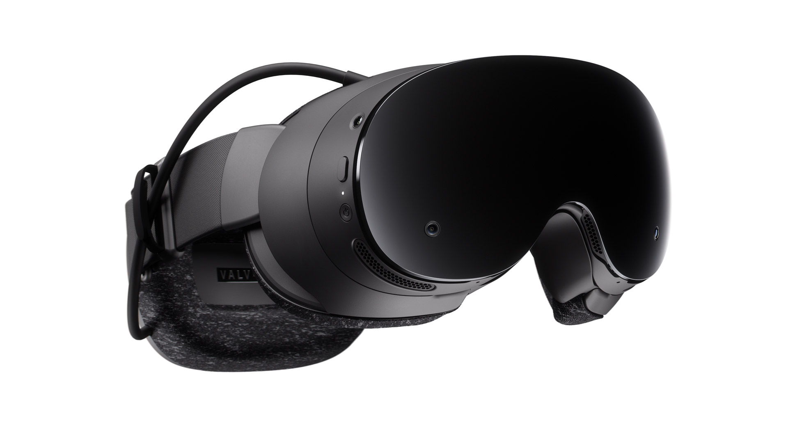
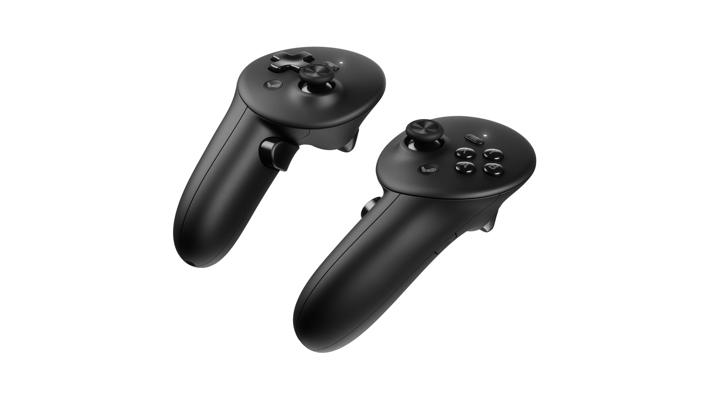
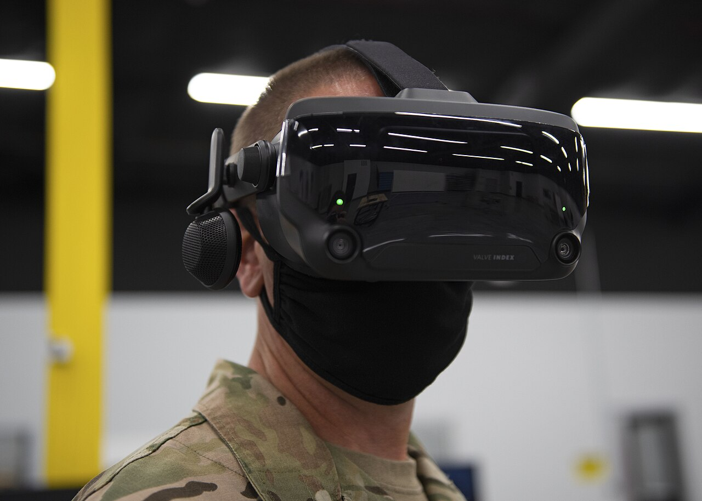

Pensado para el ojo
Solo el centro de la vista es nítido. El visor pone el detalle justo ahí.
Interacción VR
El visor de realidad virtual que sabe dónde miras
El Steam Frame es un visor de realidad virtual de Valve que salió a la venta el 14 de septiembre de 2026. Funciona sin cables, solo o conectado a un ordenador, y tiene cámaras en su interior que siguen el movimiento de los ojos.
Con esa información hace el «foveated streaming»: el ordenador envía con máxima calidad solo la zona de la imagen que estás mirando y rebaja el resto, que el ojo de todos modos ve borroso.

Imagen: Valve, vía VR.org
Porque convierte la mirada en una forma más de comunicarse con el ordenador. Además del teclado o del mando, el sistema sabe qué estás mirando y adapta lo que te muestra a cómo funciona el ojo humano.
Es un buen ejemplo de interacción implícita: el usuario no da ninguna orden al mirar, pero el sistema usa esa información para responderle mejor. Además es una interfaz multimodal, porque combina la mirada, el movimiento de la cabeza y los mandos.
Solo el centro de la vista es nítido. El visor pone el detalle justo ahí.
El seguimiento de los ojos funciona nada más ponértelo.
Ni cable al ordenador ni sensores en la habitación: puedes moverte con libertad.
Tienen los botones de un mando de consola, así que ya sabes usarlos.

Los mandos del Steam Frame. Imagen: Valve, vía VR.org
Los visores se han hecho más ligeros, han perdido los cables y han aprendido a «entender» mejor al usuario:

Valve Index. Foto: Robyn Hunsinger, U.S. Air Force (dominio público), vía Wikimedia Commons
| Aspecto | Valve Index (2019) | Steam Frame (2026) |
|---|---|---|
| Conexión | Cable al ordenador | Inalámbrica |
| Posición | Dos sensores en la sala | Cámaras en el propio visor |
| Ojos | No los sigue | Seguimiento ocular |
| Sin ordenador | No funciona | Funciona solo |